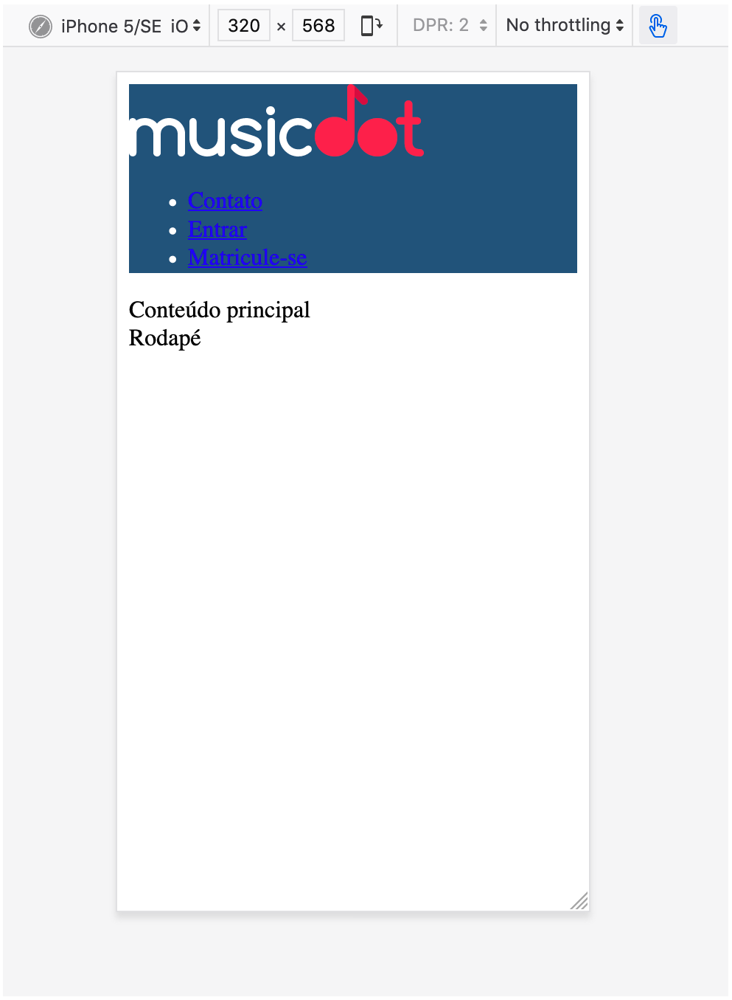
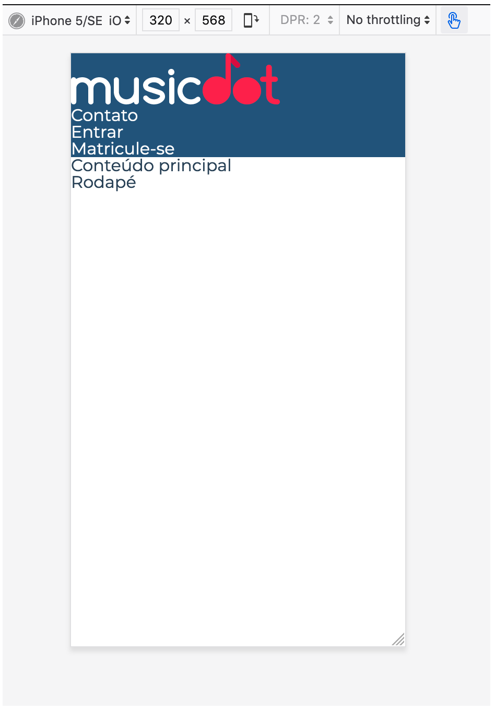

Nessa página seguiremos uma organização de arquivos CSS onde cada bloco do BEM terá seu próprio arquivo CSS.
Iniciaremos os estilos em cabecalho.css alterando sua cor de fundo para um azul-escuro "#2D5377" e a cor do conteúdo para branco "#FFF".
Ao fazer isso, note que os links não mudam sua cor para branco e que há um espaçamento que não colocamos entre a página e o cabeçalho:

Para solucionar precisaremos adicionar um CSS que retire os estilos padrão do navegador. Chamamos esse tipi de estilo de reset. O reset que usaremos está parcialmente pronto e está disponível em https://meyerweb.com/eric/tools/css/reset/reset.css.
Adicionaremos mais alguns estilos nesse reset:
alteraremos a fonte padrão de todo texto na página pela fonte Montserrat
todo texto na página por padrão terá a cor #2e4255
todo link terá a cor herdada da cor da fonte do seu parente
todo link terá a decoração de texto (e.g. underline) herdada de seu parente
Para que a fonte Montserrat funcione mesmo em computadores que não tenham ela instalada, precisaremos baixar e criar essa família de fontes com CSS. Por enquanto, usaremos esse CSS pronto de um serviço chamado Google Fonts, em: https://fonts.googleapis.com/css?family=Montserrat:300,400,500,600,700,&display=block. Nesse endereço há um arquivo CSS com tudo pronto, basta importá-lo como um arquivo CSS na página.
O resultado final será o seguinte:
